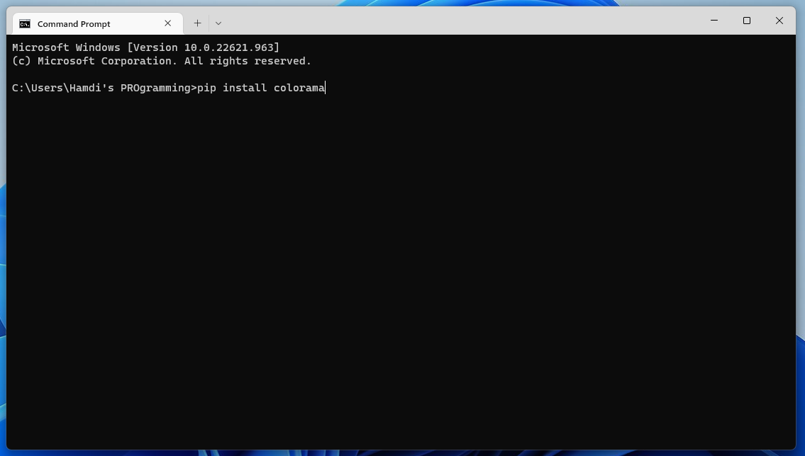

Hey there awesome devs, today we'll be learning the many awesome ways to use the colorama library in Python! If you don't know already, colorama is a simple-to-use library that allows you to change the color of text in Python. First, we'll have to install it in order to use it. Ready? Let's get coding :)
You can use pip to install colorama (which is what I recommend) or you can use anaconda to install it. Once you've successfully installed colorama, create a new Python file and go ahead and put this code in it:
import colorama
from colorama import Fore, Back
colorama.init()
print(f"{Fore.GREEN}Hello, {Fore.BLUE}world!")
Pretty simple, right? First, we have to import the colorama library and bring in the init function. This tells colorama to initialise itself. Then, we tell colorama what color to use for the text. To do this, we take advantage of F strings and use string interpolation to allow colorama to modify the text's color. That's not all though:
print(f"{Back.MAGENTA}Hello, {Back.RED}world!")}")
Giving text a background color is pretty simple too; it's just that you have to use the Back object instead of Fore.
Colorama is a super simple-to-use library and is great for any command-line based application! I hope you learnt something new, and until next time, happy coding :)